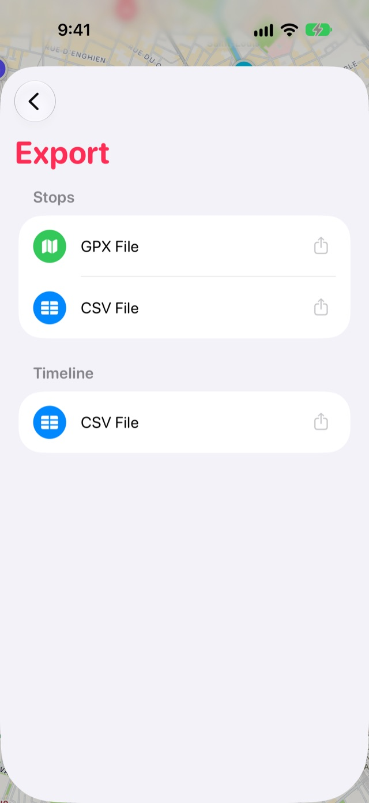

如何從 Stops 輸出你的地點和時間軸
你在 Stops 中保留的一切都屬於你，可以隨身帶走。隨時都能輸出到 GPS App、試算表、Google Earth 或朋友的 Stops。
- 免費
- 幾秒鐘
- iPhone 和 iPad
逐步說明
-
輸出所有內容
從標籤列末端的書本按鈕打開手記，點一下設定齒輪，然後選擇輸出。
- 停靠點 › GPX檔案：適用於地圖和 GPS App。
- 停靠點 › CSV檔案：適用於試算表。
- 時間軸 › CSV檔案：包含每次造訪的時間和地點。
點一下其中一項，然後從分享表單儲存或傳送檔案。

-
輸出單一列表
在列表中，按住某個列表，然後選擇輸出。可選擇 GPX、適用於 Google Earth 和 Google 我的地圖的 KML，或是 Stops檔案，在別人的 Stops 中打開時會保留列表的外觀和每日安排。
須知
- 輸出在你的裝置上完成。除非你自己傳送，否則不會傳送任何內容。
更多指南
GPX 檔案把健行、單車和 GPS App 中的航點帶進來，成為停靠點。Google Maps 已儲存地點使用 Google Takeout，把你在 Google Maps 加星號和儲存的地點帶過來。Google Maps Timeline從 Google Maps Timeline 輸出檔填入多年來的過往造訪紀錄。
取得 Stops
每個值得停下的地方，盡在 iPhone、iPad、Mac 和 Apple Watch。